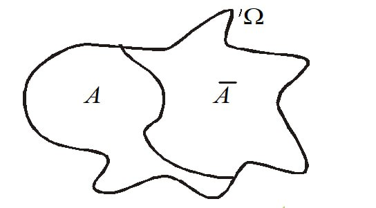

Елементи теорії ймовірності
Теоретичні відомості про теорію ймовірності
Теорія ймовірностей — це розділ математики, що вивчає випадкові події та загальні властивості подій,
процесів.
У теорії ймовірностей експерименти називаються дослідами, а можливі результати — наслідками.
Усі можливі результати разом створюють множину наслідків.
Будь-яке твердження про результат досліду, правильність якого можливо перевірити,
називається подією.
Приклад теорії ймовірності
Монету кидають тричі й записують, якою стороною вгору вона падає — гербом (г) чи цифрою (ц). Знайди множину наслідків. Множина результатів цього досліду складається з 8 рівносильно можливих результатів.
Класифікація подій
Все, що відбувається або не відбувається в дійсності, називається явищами або подіями.
В свою чергу події бувають:
Подію називають випадковою по відношенню до певного випробування (досліду), якщо в ході цього випробування вона може відбутися, а може й не відбутися.
Наприклад, якщо випробування полягає в одному киданні грального кубика,
то в ході цього випробування можливі наступні події (результати випробування):
на верхній грані кубика випаде число 1, число 2, ..., число 6.
Подію називають достовірною (вірогідною) по відношенню до певного випробування,
якщо в ході цього випробування подія обов'язково відбудеться.
Наприклад, достовірною подією буде поява одного
з шести чисел (1,2,3,4,5,6) при одному киданні грального кубика.
Подію називають неможливою по відношенню до певного випробування, якщо в ході цього випробування
подія за даних умов не може відбутися.
Наприклад: неможливою подією є випадання числа 7 при киданні звичайного грального кубика.
Приклад
При киданні монети існують дві елементарні події:
поява орел
поява монетка
Розглянуті в останньому прикладі події несумісні (поява однієї з них виключає появу іншої),
єдино можливі (обов'язково відбудеться одна з них) і рівноможливі
(у кожної події рівні шанси відбутися).
Трішки перевірки
1. Розділ математики, який займається дослідженням закономірностей у масових явищах,
називається ……..
2. Подію називають …….. по відношенню до певного випробування (досліду),
якщо в ході цього випробування вона може відбутися, а може й не відбутися.
3. Визнач, чи є події A і B несумісними, якщо:
A — випадання числа 4,
B — випадання парного числа при одному киданні грального кубика.
4. Визнач, чи є задані події незалежними.
Здійснюється кидання двох кубиків. Розглянемо наступні події:
подія A — на першому кубику випала непарна кількість очок.
Подія B — на другому кубику випала непарна кількість очок.
Подія C — сума очок є непарною.
Операції над подіями
Додавання. Сумою двох подій А і В називається така подія С = А UВ (С = А + В) Множення. Добутком двох подій А і В називається така подія С = А∩ В (С = АВ) Віднімання. Різницею двох подій А і В називається така подія С = А \ В (С = А – В) Подія, яка протилежна А, позначається Ā. А = Ω, А∩ Ā = . Протилежною подією Ā до події А називається подія , яка полягає в тому що подія А в результаті випробування не відбулася. 
Приклад
Якщо при пострілі в ціль подія А полягає у попаданні за першим пострілом, а подія В - за другим, то подія С полягає у попаданні взагалі, байдуже при якому пострілі - при першому, при другому чи при обох взагалі
Трішки перевірки
На стіл кидають два гральні кубики. Подія A — на першому кубику випало число 5,
подія B — на другому кубику випало число, не менше, ніж 5.
Визнач, у чому полягає подія AB.
Відповідь:
на першому кубику випало число 5, а на другому — будь-яке число,
або на першому кубику випало будь-яке число, а на другому — одне з чисел 5 або 6
на першому кубику випало 5 очок, а на другому — одне з чисел 5 або 6
Статистична ймовірність
Статистичною ймовірністю називається число, близько якого коливається відносна частота
події за умови великої кількості дослідів.(P(A)).
Якщо в N незалежних дослідах подія A відбувається M разів,
то M називається абсолютною частотою події A, а співвідношення MN називається
відносною частотою події A.
Відносну частоту події A позначають W(A), тому за визначенням W(A)=M/N.
Можна вважати достовірним той факт, що при будь-якій досить великій серії
випробувань відносна частота події A наближається до певного числа — ймовірності
цієї події. Отже, W(A)≈P(A) за умови великої кількості випробувань.
Приклад
Проведемо експеримент:
1. кинемо гральний кубик 200 разів і кожен раз будемо записувати кількість пунктів,
що випали;
2. підрахуємо, у скількох випадках випало 4 пункти.
Припустимо, що після підрахунків результат 4 був 32 рази.
У наших експериментах подія A — випали 4 пункти.
Отже, за визначенням:
00
1. абсолютна частота події A дорівнює 32;
2. відносна частота події A=32/200.
У нашому експерименті відносна частота події A=32/200 або статистична ймовірність P(A)≈32/200.
Трішки перевірки
1.У виготовлені партії з 10000 деталей виявлено 238 бракованих деталей.
Знайди відносну частоту появи в даній партії бракованої деталі
2.Обчисли останній стовпчик таблиці (з точністю до тисячних):
Контрольні завдання для перевірки
1. Що таке теорія ймовірності ?
2. Які бувають події ? (Класифікація подій)
3. Які операції проводяться над подіями ?
4. Яка формула відносної частоти події ?
5. Обчислити задачу:
За статистикою, на кожні 2000 лампочок припадає 6 бракованих.
Обчисли ймовірність купити небраковану лампочку.
Список використаних джерел: